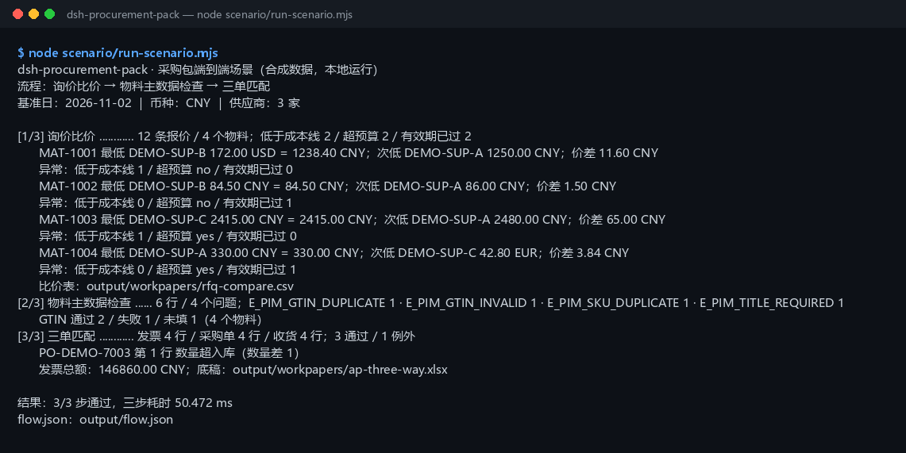

真实运行截图

上图是 node scenario/run-scenario.mjs 的真实输出，不是示意图（原始终端文本）。数据全部为 DEMO-* / MAT-100* 合成值。
这个包解决什么
同一组 4 个物料、3 家供应商的报价，在三个插件之间传递，而不是三个样例各跑一遍。
它不替采购做定标判断，也不做供应商准入、招投标评分或合同审查。三类异常、主数据问题和三单例外仍需人工复核。
为什么第 1 步不是“招标要求提取”
任务约定优先串 dsh-tender-requirements 或 dsh-bid-qual-check，但本工作区里 dsh-tender-requirements 位于 _scratch/20261026-market/：lib/index.mjs 是打包后的插件，只导出 apply（没有 createTools），入参是 .docx，并且要从它自己的 scratch node_modules 解析依赖；dsh-bid-qual-check 在 04-build/ 下也没有可 import 的包。
因此按约定使用 dsh-rfq-compare + dsh-pim-lint + dsh-ap-three-way 回退组合，仍然覆盖采购主链路：比价 → 主数据 → 三单。若以后 dsh-tender-requirements 在 04-build/ 下暴露稳定的 createTools/纯函数 API，只需替换第 1 步。详见 README-zh。
你需要准备什么
把文件放进仓库 04-build/dsh-procurement-pack/scenario/data/ 对应目录，保持表头不变。
| 文件 | 放在哪里 | 最少需要的列 / 字段 |
|---|---|---|
| 供应商报价 | rfq/ | supplier,material,qty,unit_price_cents,currency,lead_time_days,valid_until；note 可选 |
| 成本线与预算 | rfq/ | as_of、cost_lines[]、budgets[]（CNY 分） |
| 物料主数据 | pim/ | sku,title,gtin,price |
| 采购单 / 收货单 / 发票 | ap/ | PO/GRN：po_no,line_no,qty,...；发票：supplier,invoice_no,po_no,line_no,qty,unit_price,amount |
报价金额用整数分（123840 = 1238.40 元）；AP 单据金额用元、最多两位小数；日期写 YYYY-MM-DD；报价币种只支持 CNY / USD / EUR，跨币种按占位汇率折算。
三步操作
先运行同一条命令（脚本一次跑完）：
$ cd 04-build/dsh-procurement-pack $ node scenario/run-scenario.mjs
屏幕上是 [1/3]～[3/3] 三段；下面每一步对应一段。
第 1 步：询价比价（dsh-rfq-compare）
对应 [1/3] 段
[1/3] 询价比价 ............ 12 条报价 / 4 个物料；低于成本线 2 / 超预算 2 / 有效期已过 2
MAT-1001 最低 DEMO-SUP-B 172.00 USD = 1238.40 CNY；次低 DEMO-SUP-A 1250.00 CNY；价差 11.60 CNY
异常：低于成本线 1 / 超预算 no / 有效期已过 0
MAT-1002 最低 DEMO-SUP-B 84.50 CNY = 84.50 CNY；次低 DEMO-SUP-A 86.00 CNY；价差 1.50 CNY
异常：低于成本线 0 / 超预算 no / 有效期已过 1
MAT-1003 最低 DEMO-SUP-C 2415.00 CNY = 2415.00 CNY；次低 DEMO-SUP-A 2480.00 CNY；价差 65.00 CNY
异常：低于成本线 1 / 超预算 yes / 有效期已过 0
MAT-1004 最低 DEMO-SUP-A 330.00 CNY = 330.00 CNY；次低 DEMO-SUP-C 42.80 EUR；价差 3.84 CNY
异常：低于成本线 0 / 超预算 yes / 有效期已过 1
比价表：output/workpapers/rfq-compare.csv
12 条报价覆盖 4 个物料；最低价、次低价与价差都先按占位汇率折算成 CNY，再按交期打破同价。合计低于成本线 2 条、超预算 2 个物料、有效期已过 2 条。异常是标记，不自动淘汰报价。
第 2 步：物料主数据检查（dsh-pim-lint）
对应 [2/3] 段
[2/3] 物料主数据检查 ...... 6 行 / 4 个问题；E_PIM_GTIN_DUPLICATE 1 · E_PIM_GTIN_INVALID 1 · E_PIM_SKU_DUPLICATE 1 · E_PIM_TITLE_REQUIRED 1
GTIN 通过 2 / 失败 1 / 未填 1（4 个物料）
6 行主数据里发现 4 个问题：E_PIM_GTIN_DUPLICATE 1 · E_PIM_GTIN_INVALID 1 · E_PIM_SKU_DUPLICATE 1 · E_PIM_TITLE_REQUIRED 1。4 个主物料里 GTIN 通过 2 个、失败 1 个、未填 1 个；主数据问题不阻断比价，但下单前应先修。
第 3 步：三单匹配（dsh-ap-three-way）
对应 [3/3] 段
[3/3] 三单匹配 ............ 发票 4 行 / 采购单 4 行 / 收货 4 行；3 通过 / 1 例外
PO-DEMO-7003 第 1 行 数量超入库（数量差 1）
发票总额：146860.00 CNY；底稿：output/workpapers/ap-three-way.xlsx
采购单单价取第 1 步各物料的最低价（折算 CNY）；4 行发票、4 行采购单、4 行收货单，3 行通过、1 行例外。例外是 PO-DEMO-7003 第 1 行：发票比收货多 1 件（qty_over_grn）。 发票总额 146860.00 CNY。
结果文件
| 路径 | 内容 |
|---|---|
output/flow.json | 本次运行的完整链路：每步输入哈希、输出摘要、耗时、状态、产物清单 |
expected/flow.json | 金标；测试剔除时间字段后逐字段比对 |
output/workpapers/rfq-compare.csv | 比价表：每个物料一行，含最低/次低/价差/交期/成本线/预算/三类异常计数 |
output/workpapers/ap-three-way.xlsx | 三单底稿：Matches / Exceptions 两张表 |
scenario/data/ | 合成输入：报价、假设、物料主数据、采购单、收货单、发票 |
output/ 每次运行重建，已在 .gitignore 中忽略；金标在 expected/flow.json，不要被覆盖。
出错怎么办
| 报错 | 通常原因 | 下一步 |
|---|---|---|
E_RFQ_EMPTY | 报价 CSV 只有表头没有数据行 | 表头下至少补一行；先 ingest 再 compare |
E_RFQ_QTY / E_RFQ_PRICE | 数量不是正整数，或单价不是正整数分 | 数量写 1/10/100；金额写整数分，unit_price 最多两位小数 |
E_RFQ_CURRENCY | 币种不是 CNY/USD/EUR | 先折算成三种之一，并在 note 注明原始币种与汇率来源 |
E_RFQ_DATE | valid_until / as_of 不是真实 YYYY-MM-DD | 改成真实 ISO 日期；2026-02-30 会被拒绝 |
E_RFQ_CSV | 表头缺列、列数对不上或引号未闭合 | 对照 scenario/data/rfq/quotes.csv；备注含逗号时整体加引号 |
E_PIM_CSV_EMPTY / E_PIM_HEADER / E_PIM_CSV_ROW | 主数据 CSV 只有表头、缺四列或某行列数不对 | 表头固定 sku,title,gtin,price；用 Excel 另存为 CSV UTF-8 |
E_AP_CSV_INVALID | AP CSV 缺表头、金额读不懂、空行/坏行 | 对照 scenario/data/ap/*.csv；金额写 1234.56 |
| 其他错误 | 文件权限、临时目录或数据版本变化 | 保留完整报错和 output/flow.json，先读错误里的“下一步” |
三个插件
仓库内完整中文说明：04-build/dsh-procurement-pack/README-zh.md；英文简版：README.md。运行与测试命令：
$ node scenario/run-scenario.mjs $ node --test test/*.test.mjs $ node scenario/run-scenario.mjs --write-expected # 有意改动输出后重建金标